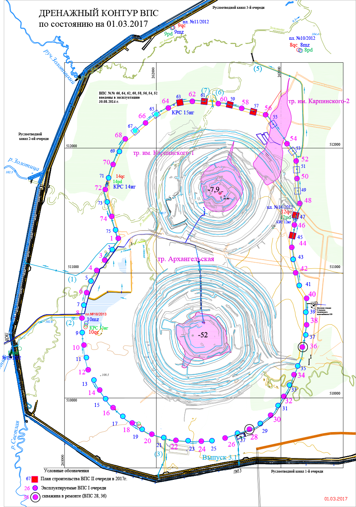

Горные работы
ПАО «Севералмаз» разрабатывает месторождении алмазов им. М.В. Ломоносова. В настоящее время горные работы ведутся в соответствии с проектом «ГОК на месторождении алмазов им. М.В. Ломоносова. Пусковой комплекс производительностью 4.0 млн. тонн руды в год» (Якутнпроалмаз, 2013 г.) и дополнением к техническому проекту (Якутнипроалмаз, 2016 г.).
Текущим проектом предусмотрена отработка двух самых южных кимберлитовых трубок месторождения – Архангельская и им. Карпинского-1 карьерами I очереди.
В течение 1991-1997 гг. на месторождении был проведен ряд опытных работ по определению наиболее оптимального метода вскрытия и отработки рудных тел, в итоге наиболее целесообразным был признан классический способ – карьер. Горные работы на тр. Архангельская были начаты в 2003 году, а на тр. им. Карпинского-1 в 2007 г.
В связи с низкой крепостью вмещающих пород и кимберлитов горные работы на карьерах ведутся без предварительной подготовки горной массы буровзрывным способом. Выемка и погрузка горной массы производится гидравлическими экскаваторами с рабочим оборудованием «прямая» и «обратная» лопаты, с объемом ковша 7 м3 и 15 м3. В настоящее время парк экскаваторов, задействованных на погрузке горной массы составляет 5 единиц. Суммарная производительность обоих карьеров Ломоносовского ГОКа по руде составляет 4,0 млн. тонн в год, а по общей горной массе – 14-15 млн. м3 в год.
Системой разработки предусмотрен вывоз вскрышных пород во внешние отвалы, а руды на рудные склады. Для формирования складов и отвалов используется 7 единиц бульдозерной техники.
| Карьер тр. Архангельская | Текущие | Проектные параметры I очереди |
|---|---|---|
| D - диаметр по поверхности, м | 1191 х 1151 | 1191 х 1151 |
| H - Глубина, м | 175 | 324 |
| Карьер тр. им. Карпинского-1 | Текущие | Проектные параметры I очереди |
|---|---|---|
| D - диаметр по поверхности, м | 1161 х 1050 | - |
| H - Глубина, м | 120 | 260 |
Всего за период строительства карьеров I очереди (до 2025 года) на трубке Архангельская и трубке им. Карпинского-1 будет добыто … млн. тонн руды и более … млн. тонн горной массы. Перспективные границы карьеров обусловлены глубиной постановки запасов месторождения и составляют 460 м от дневной поверхности.
